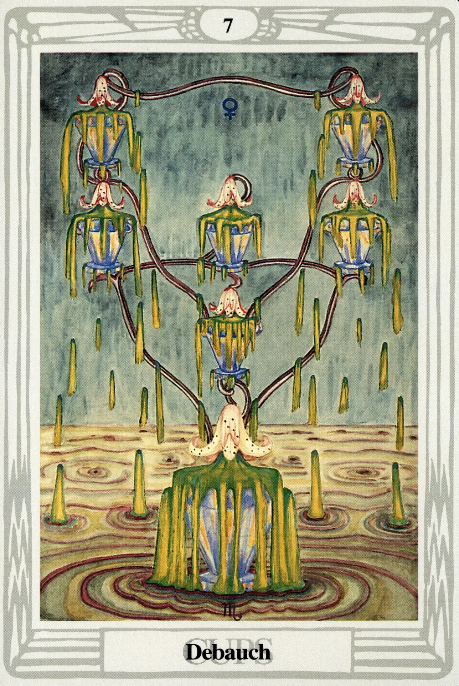

Cups
Seven of Cups
Debauch

(Venus in Scorpio)
20° to 30° Scorpio
November 13 to November 22
Original Title: Lord of Illusionary Success.
Golden Dawn Model: The cups are arranged as two descending triangles above a point: a hand holds lotus stems, which arise from a central lower cup. The hand is above this cup and below the middle one. With the exception of the central lower cup, each is overhung by a lotus flower, but no water falls from any of the flowers. All the cups are empty.
Queen Scale for Netzach: Emerald.
The Four Scales for Venus: Emerald Green; Sky Blue; Early Spring Green; Bright Rose or Cerise, rayed Pale Green.
The Four Scales for Scorpio: Green Blue; Dull Brown; Very dark Brown; Livid Indigo Brown.
Formula: 7 (Netzach) of Cups (Briah) + Venus in Scorpio = DEBAUCH
Crowley is definitely not a fan of the Seven of Cups:
This is one of the worst ideas that one can have; its mode is poison, its goal madness. It represents the delusion of Delirium Tremens and drug addiction; it represents the sinking into the mire of false pleasure. There is something almost suicidal in this card.
Just look at this card—if you can. Yuck! What happened to all that great Cup stuff higher up on the Tree of Life? Doesn't sexy Venus like to show off in sexy Scorpio? She does. She likes to show off everywhere! Venus, however, is not well dignified in Scorpio and often embarrasses herself when she visits.
You ask, shouldn't she be happy in Netzach, the sphere of Venus? Sure she is! She's so happy she's making herself sick. This is much-too-much of what was once a good thing and, this low on the tree and this far off balance, there isn't a single influencing factor left to remind her the party's over.
This card seems like the next logical step in the Abundance, Luxury, Disappointment sequence. Three martinis is abundantly enough; four is just the luxury of showing off; five is disappointing because you're not getting high any more, you're just getting smashed. But after seven—oh dear! The Seven of Cups is a stumbling dash to the lavatory just moments after you thought you were being irresistible to an attractive stranger.